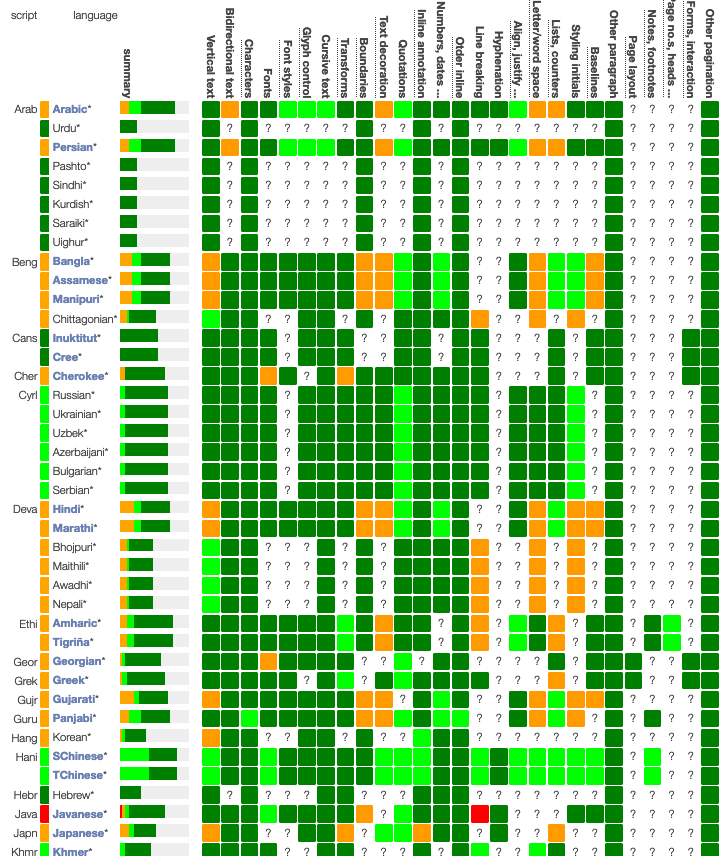
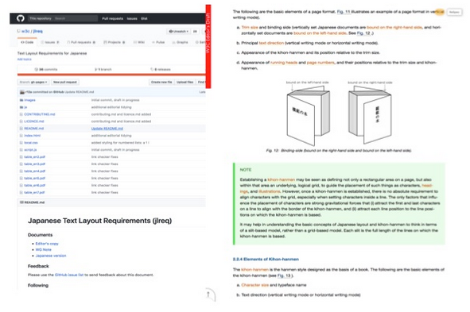
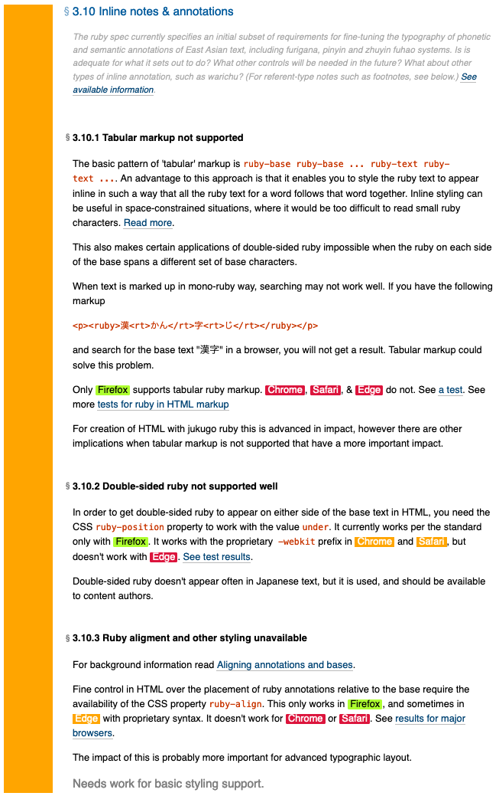
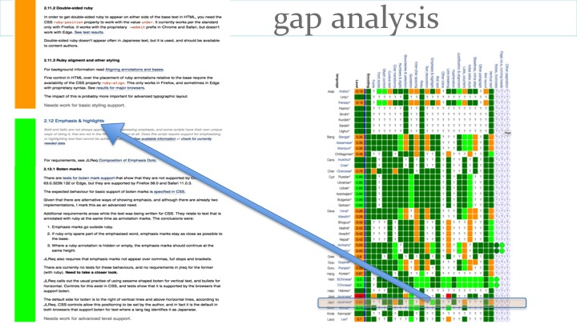
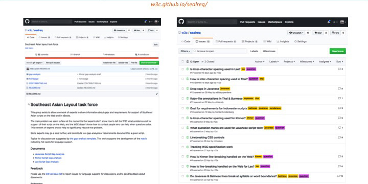
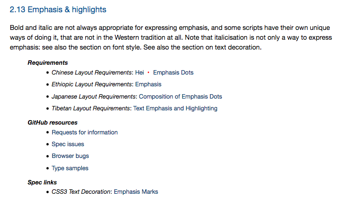
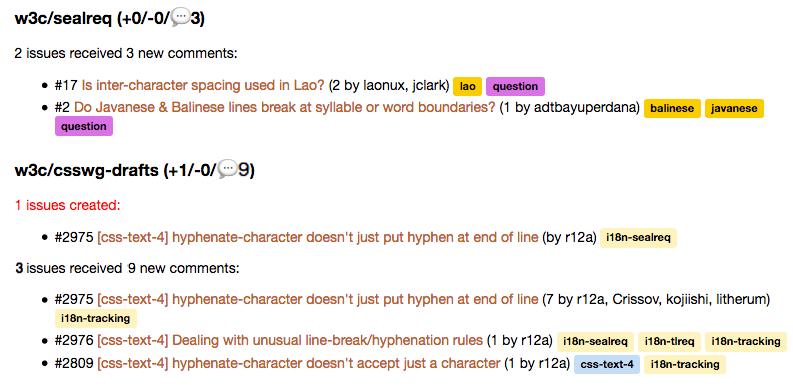
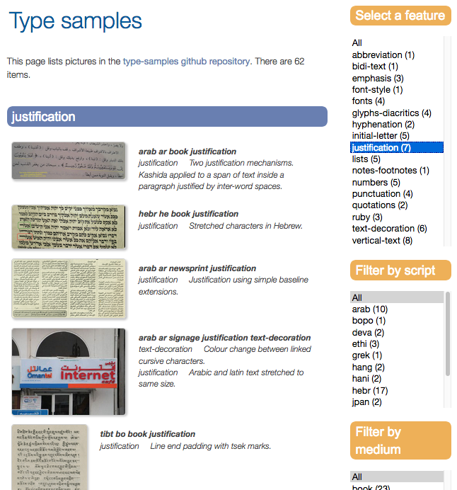

W3C国际化工作的首要使命，也是W3C自身的使命，是打造人人可用的万维网。W3C与其他组织合作并依赖它们来补充这项工作：Unicode联盟创建语言支持所需的字符及其使用算法；世界各地的字体设计师和开发者提供支持全球语言的字体；ICANN和IETF领导国际化域名和邮件地址的普遍适用（UA）工作。
W3C关注的重点领域之一是网页和数字出版物中的内容排版。虽然许多问题可以通过CSS解决，但也有其他技术需要考虑这些因素，例如Timed Text、WebVTT、SVG、XSL以及HTML等标记模型。该工作尤其关注文本的机制，例如换行与对齐规则、表达强调或装饰文本的方式、本地化计数样式、在标记中支持双向文本、首字样式、连字符断词、页面版式等。
这一领域往往难以找到关于用户期望的信息，尤其是英语资料。积极参与保障这些排版机制在Web上得到良好支持的专家寥寥无几。此外，该领域也可能存在一定程度的灵活性，因为许多文化仍在探索传统实践如何迁移到基于Web的内容世界。
近年来，W3C加大力度，更好地了解全球各地书写系统和文化的需求，并将这些需求传达给规范和浏览器的开发者。下面我们来看一些正在推进或刚刚启动的工作，以及潜在的未来方向。
语言矩阵
语言矩阵是最近推出的一项创新。我们计划将其用作热力图，以展示语言在Web上的支持程度。我们最初跟踪了约 80 种语言，如果有专家能够提供必要的信息，我们也乐于添加更多语言。
矩阵的列代表各种排版特性，这些特性需要得到Web技术的支持，人们才能使用Web。矩阵中的颜色显示这些特性是支持良好、需要进一步工作以满足高级出版需求、需要进一步工作以满足基础网页使用，还是问题严重到使该语言难以在网上使用。
撰写本文时，有33种语言在高级出版方面需要改进；27种语言在基础功能上需要改进，另有1种语言在Web上的表现不佳。然而，矩阵中41%的单元格带有问号，这表明我们需要开展研究，了解该特性的具体状态。
矩阵能够帮助我们整体了解全球各地本地用户的Web支持状况，并协助识别和确定亟需开展工作的领域。

排版需求文档
几年前，日本出版行业的专家与W3C合作，编写了一套支持日文排版的需求。最终形成的文档《日文排版需求》（简称“jlreq”），以英文和日文发布，取得了巨大的成功，甚至在日本以纸质书的形式出版。

在jlreq发布之后，其他专家团队也开始合作编写类似的文档，针对韩文（klreq）、简体与繁体中文（clreq）、吉兹字母（elreq）、天城文（ilreq）、阿拉伯字母（alreq）以及蒙古文（mlreq）。此外，还有关于藏文（tlreq）和希伯来文的初步工作，W3C 的数字出版工作组也在推进一份“Latin req”文档。
需要注意的是，lreq文档仅描述阅读文本时应当看到什么，而不是应用或网站的作者应该如何做。我们只描述书写系统对用户呈现的样子，有助于避免文档过时。描述与某书写系统相关的特定技术（如CSS）或当前浏览器、电子阅读器如何处理该书写系统的信息，则应放在其他地方。接下来我们要介绍的是……
差距分析
编写排版需求文档并不容易，我们发现将需求与现实相匹配这一关键步骤往往都是通过临时方式完成的，甚至根本没有落实。我们希望有一种更快的方法来启动差距的分析和解决。
为此，我们为所有语言支持小组共同开发了一个差距分析框架。这个框架缩短了小组的筹备期，帮助他们高效编写文档，并提供相关支持信息。
记录差距的目标是为参与者带来更强的推动力。各个差距可以逐一记录，并立即为规范和浏览器开发者提供有用的信息。
差距分析文档并不关注解决方案，只是阐明使用中的障碍。文档还以本地社区所面临的痛点为依据，帮助我们为解决方案的工作设定优先级。这些文档包含相当具体的信息，随着时间推移和问题的解决，其中的部分内容预计会被淘汰并更新。（更多信息参见Setting up a Gap Analysis Project。）

记录差距是首要任务，但小组也可以在识别差距的同时，编写单独的需求文档，以便说明弥合差距所需的内容。差距分析工作还应配以小型测试或屏幕截图，以展示功能失效之处，并帮助实现者核对修复是否达到预期。
语言矩阵与差距分析文档的结构紧密对应，因此可以在二者之间交叉链接。

专家网络
这项工作的核心在于聚集专家共同探讨问题。目前我们面临的主要困难是：专家不知道如何向 W3C 反馈其语言在网络支持方面的问题，而W3C也不知道在问题出现时该联系哪些人寻求帮助。
为解决这一问题，我们致力于建立以特定书写系统或地区为重点的专家网络。我们的目标是显著降低参与W3C的门槛，并显著提升W3C工作的参与度——尤其是来自过去代表性不足地区的参与。
sealreq（东南亚）任务团是该领域的先行者。我们在没有编辑的情况下启动了该小组，仅在GitHub的议题列表上开展讨论。W3C员工负责整理该论坛产生的信息，我们已经在推进高棉文、老挝文和爪哇字母的差距分析文档。

语言支持索引
随着信息在议题列表、差距分析文档和排版需求中不断积累，规范开发者以及浏览器或电子阅读器的实现者需要能够找到这些资料。这正是语言支持索引发挥作用的地方。
索引的结构已经与矩阵和差距分析文档实现一致。该索引提供指向各个文字页面的链接，而这些页面又链接到信息请求、相关讨论、需求信息、排版案例、测试、差距分析文档以及规范等资源。
前往GitHub讨论的链接不仅指向相关语言支持小组的讨论串，也指向CSS、SVG、HTML等W3C工作组的仓库中的讨论。

问题跟踪
W3C 国际化兴趣组的多个邮件列表会接收GitHub活动的通知。例如，只要在东南亚排版仓库中新建、提交、评论或关闭了 GitHub 议题，public-i18n-sealreq邮件列表就会通过每日摘要获得通知。摘要不仅涵盖这个仓库的活动，也会报告在CSS、HTML等仓库中所有带有sealreq标签的议题的变动。

排版案例
另一个新资源是排版案例，它提供了一个存放现实世界中文本排版特性照片或扫描件的场所。同样，你可以按标准特性类型、语言和媒介筛选结果。

国际化问题仓库
我们尝试在GitHub上建立一个仓库，供大家记录在全球部署或使用Web时遇到的问题。这有助于 W3C 更加了解人们面临的挑战。例如，有人可以告诉我们直排文本的显示有问题，或者Web字体对发展中国家移动用户来说占用过多带宽，抑或浏览器需要识别某个社群使用的本地日历或日期时间格式等等。
排版需求小组
差距分析和需求的制定工作由多个“lreq”小组推进。请参阅当前小组列表。有些小组只是专家网络，在GitHub议题列表上讨论问题；有些小组主要致力于编写差距分析文档；还有一些小组专注于撰写排版需求文档。根据贡献者的情况，小组可以在这些类别之间转换。
典型的文档编写小组会有一位或多位主席，并定期举行电话会议。为小组交付成果做出关键贡献的成员构成核心团队。其中包括文档编辑，也包括那些定期投入时间进行审阅和讨论的人。
在核心团队之外，还有许多人通过订阅通知邮件关注相关工作，并偶尔在议题中发表评论。W3C已尽量降低参与这些小组的门槛。这些人可以就某种文字或一组文字的相关工作发表评论并跟踪其进展。
帮助我们做得更多
W3C近期一直在寻找合作伙伴，共同推进上述工作。我们需要来自世界各地的专家提供知识，以便我们更好地了解、量化并解决剩余任务，支持“人人可用的Web”。我们也在寻找能够提供资金和资源的组织，以支持国际化工作的扩展。